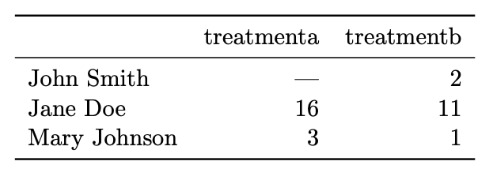
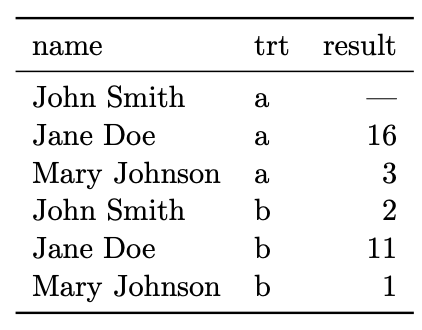
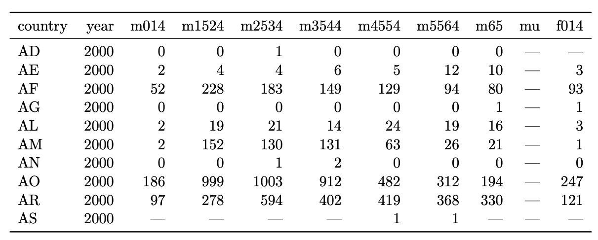
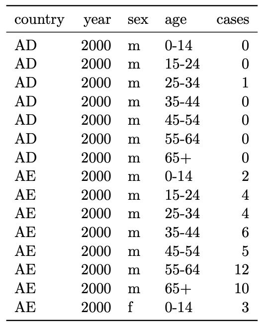

Reading: Hadley Wickham, “Tidy Data” and “Reshaping data with the reshape package”
Agenda for today:
Reshaping/tidy data/wide vs. long format
Merging
We usually want our data in the folowing form:
In a rectangular data frame
One row per observation
Data don’t always come this way!
Even if the data do satisfy the “one row per observation” rule for one analysis, they don’t necessarily do so for another, and we often need to change the “shape” of the data.
Three concepts:
Values
Variables
Observations
Datasets contain values, each of which belongs to a variable and an observation.
Datasets can encode these in a lot of different ways. The “tidy” way is to have
Each variable a column
Each observation a row
Each cell a value
This is usually the way that other functions want the data to come in.
For example:

What is easy to do with data in this format?
See which treatment worked better for each individual.
Run a paired t-test on treatment a vs. treatment b.
What is hard to do with data in this format?
Run a linear model with result modeled as a function of treatment.
Subset the data to the observations corresponding to a specific treatment (not hard so much as not programmatically nice).
Same information:

What is easy to do with data in this format?
Run a linear model with result modeled as a function of treatment.
Subset to observations corresponding to one treatment.
What is hard?
Compute treatment a - treatment b.
Run a paired t-test.
Another example:

Easy:
See overall numbers of cases for each country.
Compare some of the age ranges.
Hard:
Plot cases as a function of sex, age, country, year.
Model cases as a function of sex, age, country, year.

Easy:
Plot cases as a function of sex, age, country, year.
Model cases as a function of sex, age, country, year.
Hard:
Compute differences between number of cases in different categories (e.g. differences in cases between males and females holding all the other categories constant).
See overall number of cases (not as compact as the other way).
Columns are all special (accessed by name) and rows are not special (accessed programmatically).
Easy to define functional relationships between variables (e.g. difference between two variables)/hard to define functional relationships between rows.
Easy to subset rows/hard to subset columns.
Easy to aggregate over rows/hard to aggregate over columns.
The term for transforming these datasets into each other is called “reshaping”, and pretty much all reshaping can be done with a combination of two operations: melting and casting.
Melting: Taking a wide dataset and making it long.
Casting: Taking a melted dataset and making it wide.
The mneumonic is that you first “melt” the data set and then you “cast” it. The “molten” data isn’t usually the final form you want it to be in, but it allows you to change it into other shapes easily.
The melt function takes data from wide form to long
form.
Conceptually, we have two sets of variables:
Identification variables, that describe the observations, and
Measurement variables, which are the quantities that are measured for each observation. If you want to do any aggregation later, it will be over the measurement variables.
To melt a dataset, you need to decide what these are.
What does a molten data table look like?
Columns (potentially more than one) for id variables.
If there is more than one measured variable, one column describing the variable measured.
One column for the value of the measured variable on the corresponding observation.
Based on what we said before, we will need to provide data, id variables, and measurement variables, but in practice we have two distinct situations:
Matrix or array input: here we assume that the id variables are the dimensions of the matrix or array, and the measurement variables are the elements of the matrix or the array. Therefore, we don’t actually specify id variables or measurement variables.
Data frame input: id variables and measurement variables have to be specified.
Let’s see an example. (Actually a very interesting study, can read here.)
## time treatment subject rep potato buttery grassy rancid painty
## 61 1 1 3 1 2.9 0.0 0.0 0.0 5.5
## 25 1 1 3 2 14.0 0.0 0.0 1.1 0.0
## 62 1 1 10 1 11.0 6.4 0.0 0.0 0.0
## 26 1 1 10 2 9.9 5.9 2.9 2.2 0.0
## 63 1 1 15 1 1.2 0.1 0.0 1.1 5.1
## 27 1 1 15 2 8.8 3.0 3.6 1.5 2.3We want to melt this data frame so that
id.vars are time, treatment, subject, rep
measure.vars are the remainder: potato, buttery,
grassy, rancid, painty
head(melt(french_fries, id.vars = c("time", "treatment", "subject", "rep"),
measure.vars = c("potato", "buttery", "grassy", "rancid", "painty")))## time treatment subject rep variable value
## 1 1 1 3 1 potato 2.9
## 2 1 1 3 2 potato 14.0
## 3 1 1 10 1 potato 11.0
## 4 1 1 10 2 potato 9.9
## 5 1 1 15 1 potato 1.2
## 6 1 1 15 2 potato 8.8You can specify just one of id.vars and
measure.vars, in which case the function will assume that
all the other variables should be in the other class.
You can also specify the variables by number instead of by name.
## time treatment subject rep variable value
## 1 1 1 3 1 potato 2.9
## 2 1 1 3 2 potato 14.0
## 3 1 1 10 1 potato 11.0
## 4 1 1 10 2 potato 9.9
## 5 1 1 15 1 potato 1.2
## 6 1 1 15 2 potato 8.8## time treatment subject rep variable value
## 1 1 1 3 1 potato 2.9
## 2 1 1 3 2 potato 14.0
## 3 1 1 10 1 potato 11.0
## 4 1 1 10 2 potato 9.9
## 5 1 1 15 1 potato 1.2
## 6 1 1 15 2 potato 8.8If you don’t specify either, the function will assume that all the factor variables should be id variables and all of the numeric variables should be measured variables.
## .id V1
## 1 time factor
## 2 treatment factor
## 3 subject factor
## 4 rep numeric
## 5 potato numeric
## 6 buttery numeric
## 7 grassy numeric
## 8 rancid numeric
## 9 painty numeric## Using time, treatment, subject as id variables## time treatment subject variable value
## 1 1 1 3 rep 1
## 2 1 1 3 rep 2
## 3 1 1 10 rep 1
## 4 1 1 10 rep 2
## 5 1 1 15 rep 1
## 6 1 1 15 rep 2You can make the output slightly nicer by specifying variable names and value names:
## time treatment subject rep flavor flavor_intensity
## 1 1 1 3 1 potato 2.9
## 2 1 1 3 2 potato 14.0
## 3 1 1 10 1 potato 11.0
## 4 1 1 10 2 potato 9.9
## 5 1 1 15 1 potato 1.2
## 6 1 1 15 2 potato 8.8Assume that the id variables are the dimensions of the array
Assume the measured variable is stored as elements in the array.
We don’t specify id variables or measurement variables.
Therefore, the syntax is simply melt(array)
For example:
## , , Sex = Male
##
## Eye
## Hair Brown Blue Hazel Green
## Black 32 11 10 3
## Brown 53 50 25 15
## Red 10 10 7 7
## Blond 3 30 5 8
##
## , , Sex = Female
##
## Eye
## Hair Brown Blue Hazel Green
## Black 36 9 5 2
## Brown 66 34 29 14
## Red 16 7 7 7
## Blond 4 64 5 8## Hair Eye Sex value
## 1 Black Brown Male 32
## 2 Brown Brown Male 53
## 3 Red Brown Male 10
## 4 Blond Brown Male 3
## 5 Black Blue Male 11
## 6 Brown Blue Male 50
## 7 Red Blue Male 10
## 8 Blond Blue Male 30
## 9 Black Hazel Male 10
## 10 Brown Hazel Male 25
## 11 Red Hazel Male 7
## 12 Blond Hazel Male 5
## 13 Black Green Male 3
## 14 Brown Green Male 15
## 15 Red Green Male 7
## 16 Blond Green Male 8
## 17 Black Brown Female 36
## 18 Brown Brown Female 66
## 19 Red Brown Female 16
## 20 Blond Brown Female 4
## 21 Black Blue Female 9
## 22 Brown Blue Female 34
## 23 Red Blue Female 7
## 24 Blond Blue Female 64
## 25 Black Hazel Female 5
## 26 Brown Hazel Female 29
## 27 Red Hazel Female 7
## 28 Blond Hazel Female 5
## 29 Black Green Female 2
## 30 Brown Green Female 14
## 31 Red Green Female 7
## 32 Blond Green Female 8There are a couple of optional arguments for making the output a little nicer, like giving a different name to the column in the output describing the measured value:
## Hair Eye Sex number
## 1 Black Brown Male 32
## 2 Brown Brown Male 53
## 3 Red Brown Male 10
## 4 Blond Brown Male 3
## 5 Black Blue Male 11
## 6 Brown Blue Male 50
## 7 Red Blue Male 10
## 8 Blond Blue Male 30
## 9 Black Hazel Male 10
## 10 Brown Hazel Male 25
## 11 Red Hazel Male 7
## 12 Blond Hazel Male 5
## 13 Black Green Male 3
## 14 Brown Green Male 15
## 15 Red Green Male 7
## 16 Blond Green Male 8
## 17 Black Brown Female 36
## 18 Brown Brown Female 66
## 19 Red Brown Female 16
## 20 Blond Brown Female 4
## 21 Black Blue Female 9
## 22 Brown Blue Female 34
## 23 Red Blue Female 7
## 24 Blond Blue Female 64
## 25 Black Hazel Female 5
## 26 Brown Hazel Female 29
## 27 Red Hazel Female 7
## 28 Blond Hazel Female 5
## 29 Black Green Female 2
## 30 Brown Green Female 14
## 31 Red Green Female 7
## 32 Blond Green Female 8reshape2 uses *cast: either dcast or
acast for data frame or array output, respectively.
Syntax:
*cast(data = mdata, formula = row_var_1 + ... + row_var_n ~ col_var_1 + ... + col_var_m, value.var)
mdata should be a molten data set
The columns of the output will be all the combinations of
col_var_1, …, col_var_n
The rows of the output will be all the combinations of
row_var_1, …, row_var_n
value.var is the value variable, the values that
should go in the cells of the output. If you don’t specify it,
melt will guess.
Example
## time treatment subject rep flavor value
## 1 1 1 3 1 potato 2.9
## 2 1 1 3 2 potato 14.0
## 3 1 1 10 1 potato 11.0
## 4 1 1 10 2 potato 9.9
## 5 1 1 15 1 potato 1.2
## 6 1 1 15 2 potato 8.8cast_ex_1 <- dcast(ff_m, time + treatment ~ subject + rep + flavor, value.var = "value")
cast_ex_1[1:5,1:5]## time treatment 3_1_potato 3_1_buttery 3_1_grassy
## 1 1 1 2.9 0.0 0.0
## 2 1 2 13.9 0.0 0.0
## 3 1 3 14.1 0.0 0.0
## 4 2 1 9.0 0.3 0.1
## 5 2 2 14.1 0.9 0.3## check to see if the numbers match
subset(ff_m, time == 1 & subject == "3" & rep == 1 & flavor == "potato")## time treatment subject rep flavor value
## 1 1 1 3 1 potato 2.9
## 25 1 2 3 1 potato 13.9
## 49 1 3 3 1 potato 14.1When you cast data, you often don’t use all of the variables.
This means that each element of the cast table will correspond to more than one measurement, and so they need to be aggregated in some way.
## time treatment subject rep flavor value
## 1 1 1 3 1 potato 2.9
## 2 1 1 3 2 potato 14.0
## 3 1 1 10 1 potato 11.0
## 4 1 1 10 2 potato 9.9
## 5 1 1 15 1 potato 1.2
## 6 1 1 15 2 potato 8.8## Aggregation function missing: defaulting to length## time potato buttery grassy rancid painty
## 1 1 72 72 72 72 72
## 2 2 72 72 72 72 72
## 3 3 72 72 72 72 72
## 4 4 72 72 72 72 72
## 5 5 71 71 71 71 71
## 6 6 72 72 72 72 72
## 7 7 72 71 72 72 72
## 8 8 72 70 72 72 71
## 9 9 60 60 60 60 60
## 10 10 60 60 60 60 60The aggregation function is specified with
fun.aggregate:
## time potato buttery grassy rancid painty
## 1 1 8.562500 2.236111 0.9416667 2.358333 1.645833
## 2 2 8.059722 2.722222 1.1819444 2.845833 1.444444
## 3 3 7.797222 2.102778 0.7500000 3.715278 1.311111
## 4 4 7.713889 1.801389 0.7416667 3.602778 1.372222
## 5 5 7.328169 1.642254 0.6352113 3.529577 2.015493
## 6 6 6.670833 1.752778 0.6736111 4.075000 2.341667
## 7 7 6.168056 1.369014 0.4208333 3.886111 2.683333
## 8 8 5.431944 1.182857 0.3805556 4.272222 3.938028
## 9 9 5.673333 1.586667 0.2766667 4.670000 3.873333
## 10 10 5.703333 1.765000 0.5566667 6.068333 5.291667A couple of other notes:
You can use ... to represent all the other variables
in the formula.
The order that you specify the variables in the formula matters for the way the output is ordered: the first variables change most slowly, and the later ones change more quickly. This is mainly important for looking at the data.
acast will give you array output instead of data
frame output.
Example of different orders:
## time treatment potato buttery grassy rancid painty
## 1 1 1 7.925000 1.7958333 0.9041667 2.758333 2.1500000
## 2 1 2 8.775000 2.4916667 0.9958333 1.716667 0.8083333
## 3 1 3 8.987500 2.4208333 0.9250000 2.600000 1.9791667
## 4 2 1 7.591667 2.5250000 1.0041667 3.900000 1.9750000
## 5 2 2 8.537500 3.1250000 0.9500000 2.141667 0.6625000
## 6 2 3 8.050000 2.5166667 1.5916667 2.495833 1.6958333
## 7 3 1 7.770833 2.2958333 0.8166667 4.650000 1.1166667
## 8 3 2 7.637500 2.0791667 0.7250000 2.895833 1.5625000
## 9 3 3 7.983333 1.9333333 0.7083333 3.600000 1.2541667
## 10 4 1 8.404167 1.9791667 1.0250000 2.079167 0.4666667
## 11 4 2 8.204167 1.6083333 0.6416667 3.512500 1.8583333
## 12 4 3 6.533333 1.8166667 0.5583333 5.216667 1.7916667
## 13 5 1 7.741667 1.3666667 0.7708333 4.279167 3.0083333
## 14 5 2 6.933333 1.8583333 0.5833333 3.641667 0.7375000
## 15 5 3 7.308696 1.7043478 0.5478261 2.630435 2.3130435
## 16 6 1 6.079167 1.8250000 0.4666667 4.337500 2.5541667
## 17 6 2 7.016667 2.0541667 0.9208333 3.841667 2.7500000
## 18 6 3 6.916667 1.3791667 0.6333333 4.045833 1.7208333
## 19 7 1 6.283333 1.2416667 0.1625000 3.204167 2.1958333
## 20 7 2 5.729167 1.3565217 0.5500000 3.837500 3.0416667
## 21 7 3 6.491667 1.5083333 0.5500000 4.616667 2.8125000
## 22 8 1 5.175000 0.9869565 0.6333333 5.387500 4.5875000
## 23 8 2 5.641667 1.5826087 0.3958333 3.825000 3.8652174
## 24 8 3 5.479167 0.9875000 0.1125000 3.604167 3.3583333
## 25 9 1 6.070000 1.8300000 0.1350000 3.950000 2.9050000
## 26 9 2 5.470000 1.6650000 0.0800000 5.240000 4.0450000
## 27 9 3 5.480000 1.2650000 0.6150000 4.820000 4.6700000
## 28 10 1 5.465000 1.9600000 0.4550000 6.495000 5.4000000
## 29 10 2 5.580000 1.7950000 0.6950000 6.310000 6.1700000
## 30 10 3 6.065000 1.5400000 0.5200000 5.400000 4.3050000## treatment time potato buttery grassy rancid painty
## 1 1 1 7.925000 1.7958333 0.9041667 2.758333 2.1500000
## 2 1 2 7.591667 2.5250000 1.0041667 3.900000 1.9750000
## 3 1 3 7.770833 2.2958333 0.8166667 4.650000 1.1166667
## 4 1 4 8.404167 1.9791667 1.0250000 2.079167 0.4666667
## 5 1 5 7.741667 1.3666667 0.7708333 4.279167 3.0083333
## 6 1 6 6.079167 1.8250000 0.4666667 4.337500 2.5541667
## 7 1 7 6.283333 1.2416667 0.1625000 3.204167 2.1958333
## 8 1 8 5.175000 0.9869565 0.6333333 5.387500 4.5875000
## 9 1 9 6.070000 1.8300000 0.1350000 3.950000 2.9050000
## 10 1 10 5.465000 1.9600000 0.4550000 6.495000 5.4000000
## 11 2 1 8.775000 2.4916667 0.9958333 1.716667 0.8083333
## 12 2 2 8.537500 3.1250000 0.9500000 2.141667 0.6625000
## 13 2 3 7.637500 2.0791667 0.7250000 2.895833 1.5625000
## 14 2 4 8.204167 1.6083333 0.6416667 3.512500 1.8583333
## 15 2 5 6.933333 1.8583333 0.5833333 3.641667 0.7375000
## 16 2 6 7.016667 2.0541667 0.9208333 3.841667 2.7500000
## 17 2 7 5.729167 1.3565217 0.5500000 3.837500 3.0416667
## 18 2 8 5.641667 1.5826087 0.3958333 3.825000 3.8652174
## 19 2 9 5.470000 1.6650000 0.0800000 5.240000 4.0450000
## 20 2 10 5.580000 1.7950000 0.6950000 6.310000 6.1700000
## 21 3 1 8.987500 2.4208333 0.9250000 2.600000 1.9791667
## 22 3 2 8.050000 2.5166667 1.5916667 2.495833 1.6958333
## 23 3 3 7.983333 1.9333333 0.7083333 3.600000 1.2541667
## 24 3 4 6.533333 1.8166667 0.5583333 5.216667 1.7916667
## 25 3 5 7.308696 1.7043478 0.5478261 2.630435 2.3130435
## 26 3 6 6.916667 1.3791667 0.6333333 4.045833 1.7208333
## 27 3 7 6.491667 1.5083333 0.5500000 4.616667 2.8125000
## 28 3 8 5.479167 0.9875000 0.1125000 3.604167 3.3583333
## 29 3 9 5.480000 1.2650000 0.6150000 4.820000 4.6700000
## 30 3 10 6.065000 1.5400000 0.5200000 5.400000 4.3050000Example of acast. id variables are row names.
## potato buttery grassy rancid painty
## 1 8.562500 2.236111 0.9416667 2.358333 1.645833
## 2 8.059722 2.722222 1.1819444 2.845833 1.444444
## 3 7.797222 2.102778 0.7500000 3.715278 1.311111
## 4 7.713889 1.801389 0.7416667 3.602778 1.372222
## 5 7.328169 1.642254 0.6352113 3.529577 2.015493
## 6 6.670833 1.752778 0.6736111 4.075000 2.341667
## 7 6.168056 1.369014 0.4208333 3.886111 2.683333
## 8 5.431944 1.182857 0.3805556 4.272222 3.938028
## 9 5.673333 1.586667 0.2766667 4.670000 3.873333
## 10 5.703333 1.765000 0.5566667 6.068333 5.291667## potato buttery grassy rancid painty
## 1_1 7.925000 1.7958333 0.9041667 2.758333 2.1500000
## 1_2 8.775000 2.4916667 0.9958333 1.716667 0.8083333
## 1_3 8.987500 2.4208333 0.9250000 2.600000 1.9791667
## 2_1 7.591667 2.5250000 1.0041667 3.900000 1.9750000
## 2_2 8.537500 3.1250000 0.9500000 2.141667 0.6625000
## 2_3 8.050000 2.5166667 1.5916667 2.495833 1.6958333
## 3_1 7.770833 2.2958333 0.8166667 4.650000 1.1166667
## 3_2 7.637500 2.0791667 0.7250000 2.895833 1.5625000
## 3_3 7.983333 1.9333333 0.7083333 3.600000 1.2541667
## 4_1 8.404167 1.9791667 1.0250000 2.079167 0.4666667
## 4_2 8.204167 1.6083333 0.6416667 3.512500 1.8583333
## 4_3 6.533333 1.8166667 0.5583333 5.216667 1.7916667
## 5_1 7.741667 1.3666667 0.7708333 4.279167 3.0083333
## 5_2 6.933333 1.8583333 0.5833333 3.641667 0.7375000
## 5_3 7.308696 1.7043478 0.5478261 2.630435 2.3130435
## 6_1 6.079167 1.8250000 0.4666667 4.337500 2.5541667
## 6_2 7.016667 2.0541667 0.9208333 3.841667 2.7500000
## 6_3 6.916667 1.3791667 0.6333333 4.045833 1.7208333
## 7_1 6.283333 1.2416667 0.1625000 3.204167 2.1958333
## 7_2 5.729167 1.3565217 0.5500000 3.837500 3.0416667
## 7_3 6.491667 1.5083333 0.5500000 4.616667 2.8125000
## 8_1 5.175000 0.9869565 0.6333333 5.387500 4.5875000
## 8_2 5.641667 1.5826087 0.3958333 3.825000 3.8652174
## 8_3 5.479167 0.9875000 0.1125000 3.604167 3.3583333
## 9_1 6.070000 1.8300000 0.1350000 3.950000 2.9050000
## 9_2 5.470000 1.6650000 0.0800000 5.240000 4.0450000
## 9_3 5.480000 1.2650000 0.6150000 4.820000 4.6700000
## 10_1 5.465000 1.9600000 0.4550000 6.495000 5.4000000
## 10_2 5.580000 1.7950000 0.6950000 6.310000 6.1700000
## 10_3 6.065000 1.5400000 0.5200000 5.400000 4.3050000Final topic: What if you have data from two different places and you need to put them together?
Basic syntax: merge(x, y, by.x, by.y)
x and y are the two datasets you want
to merge.
by.x is the column of x to merge
on.
by.y is the column of y to merge
on.
Example:
cities <- data.frame(
city=c('New York','Boston','Juneau',
'Anchorage','San Diego',
'Philadelphia','Los Angeles',
'Fairbanks','Ann Arbor','Seattle'),
state.abb=c('NY','MA','AK','AK','CA',
'PA','CA','AK','MI','WA'))
states <- data.frame(state.name, state.abb)
cities## city state.abb
## 1 New York NY
## 2 Boston MA
## 3 Juneau AK
## 4 Anchorage AK
## 5 San Diego CA
## 6 Philadelphia PA
## 7 Los Angeles CA
## 8 Fairbanks AK
## 9 Ann Arbor MI
## 10 Seattle WA## state.name state.abb
## 1 Alabama AL
## 2 Alaska AK
## 3 Arizona AZ
## 4 Arkansas AR
## 5 California CA
## 6 Colorado COWe want to add the state name to the cities data frame, and we can use merge.
## state.abb state.name city
## 1 AK Alaska Juneau
## 2 AK Alaska Anchorage
## 3 AK Alaska Fairbanks
## 4 CA California San Diego
## 5 CA California Los Angeles
## 6 MA Massachusetts Boston
## 7 MI Michigan Ann Arbor
## 8 NY New York New York
## 9 PA Pennsylvania Philadelphia
## 10 WA Washington SeattleNotice in the last example that there was some ambiguity in how the
merge took place because the two datasets have different sets of values
for state.abb.
Can modify with all, all.x, or
all.y
all = TRUE means that you get one row for values of
the merging variable that were seen in either x or
y
all.x = TRUE means you get one row for each value of
the merging variable that was seen in x
all.y = TRUE means you get one row for each value of
the merging variable that was seen in y.
## state.abb state.name city
## 1 AK Alaska Juneau
## 2 AK Alaska Anchorage
## 3 AK Alaska Fairbanks
## 4 AL Alabama <NA>
## 5 AR Arkansas <NA>
## 6 AZ Arizona <NA>
## 7 CA California San Diego
## 8 CA California Los Angeles
## 9 CO Colorado <NA>
## 10 CT Connecticut <NA>
## 11 DE Delaware <NA>
## 12 FL Florida <NA>
## 13 GA Georgia <NA>
## 14 HI Hawaii <NA>
## 15 IA Iowa <NA>
## 16 ID Idaho <NA>
## 17 IL Illinois <NA>
## 18 IN Indiana <NA>
## 19 KS Kansas <NA>
## 20 KY Kentucky <NA>
## 21 LA Louisiana <NA>
## 22 MA Massachusetts Boston
## 23 MD Maryland <NA>
## 24 ME Maine <NA>
## 25 MI Michigan Ann Arbor
## 26 MN Minnesota <NA>
## 27 MO Missouri <NA>
## 28 MS Mississippi <NA>
## 29 MT Montana <NA>
## 30 NC North Carolina <NA>
## 31 ND North Dakota <NA>
## 32 NE Nebraska <NA>
## 33 NH New Hampshire <NA>
## 34 NJ New Jersey <NA>
## 35 NM New Mexico <NA>
## 36 NV Nevada <NA>
## 37 NY New York New York
## 38 OH Ohio <NA>
## 39 OK Oklahoma <NA>
## 40 OR Oregon <NA>
## 41 PA Pennsylvania Philadelphia
## 42 RI Rhode Island <NA>
## 43 SC South Carolina <NA>
## 44 SD South Dakota <NA>
## 45 TN Tennessee <NA>
## 46 TX Texas <NA>
## 47 UT Utah <NA>
## 48 VA Virginia <NA>
## 49 VT Vermont <NA>
## 50 WA Washington Seattle
## 51 WI Wisconsin <NA>
## 52 WV West Virginia <NA>
## 53 WY Wyoming <NA>Some additional notes:
Default if you don’t specify by.x and
by.y is to use the columns that are common to the
two.
by.x/by.y can have length more than 1,
in which case we match on the entire set of specified
variables.
Can use by instead of by.x and
by.y, in which case the name of the column to merge on has
to be the same in both x and y.
Merging, melting/casting, and split/apply/combine from last week are useful enough that there are multiple implementations.
You can use other implementations, but you shouldn’t try to re-make them from scratch.
Some other options are:
join in plyr does the same thing as
merge
gather and spread, and more recently
pivot_longer and pivot_wider in the
tidyr package do roughly the same thing as
cast and melt.
There are multiple iterations of reshape, reshape2
was a redesign of reshape.